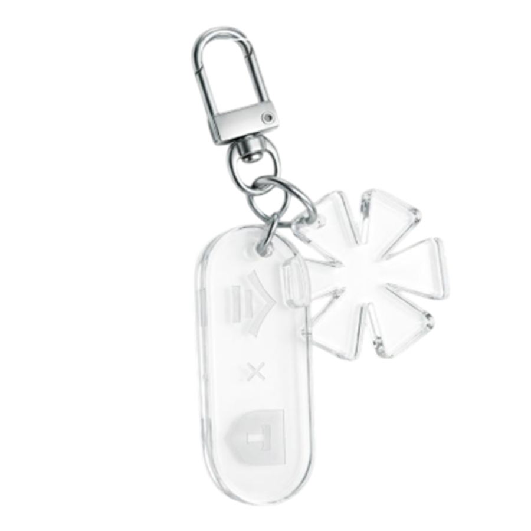
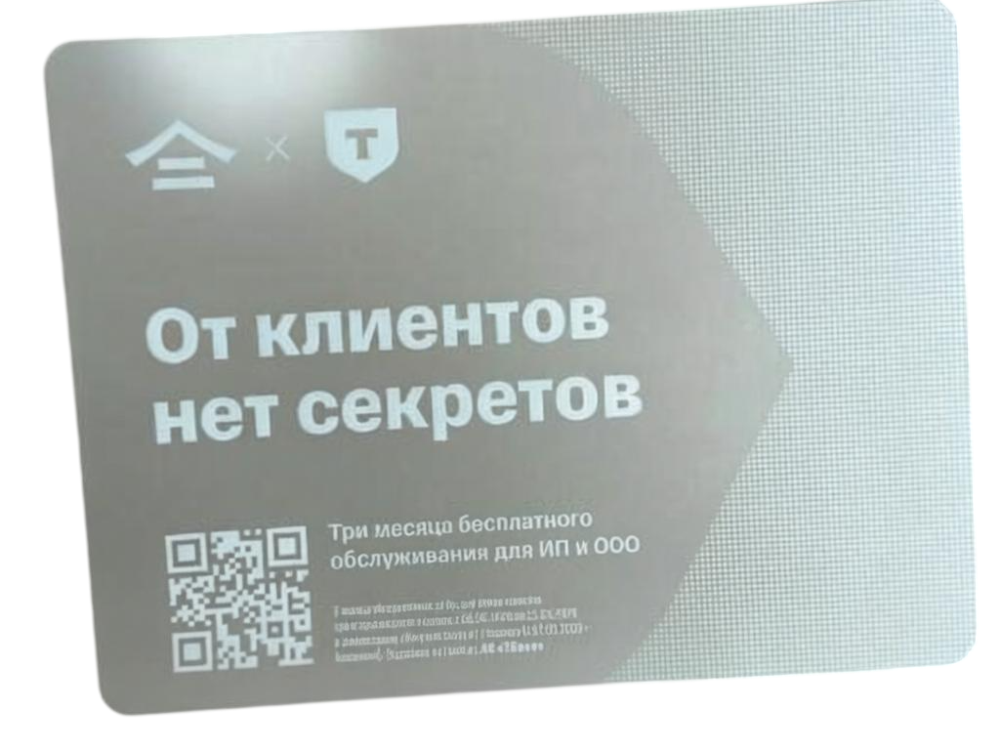
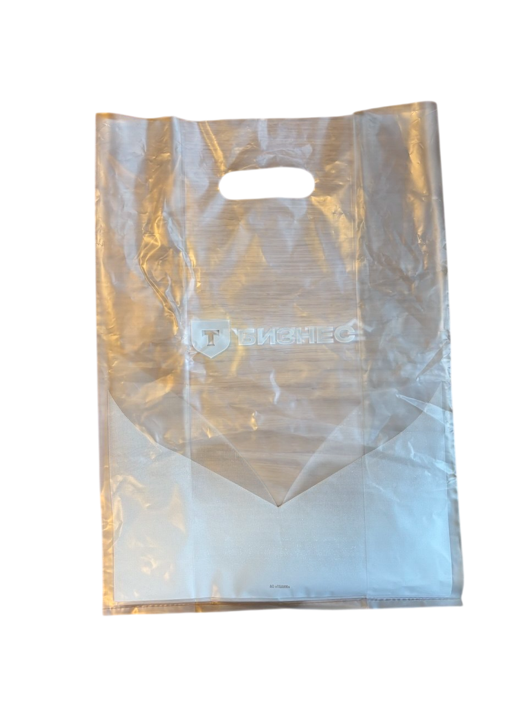
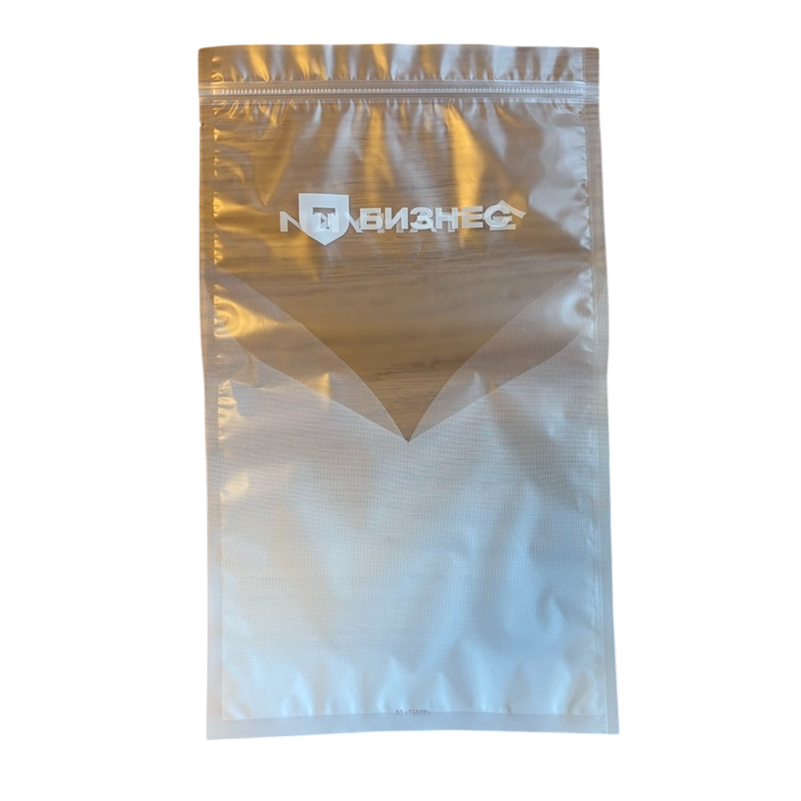
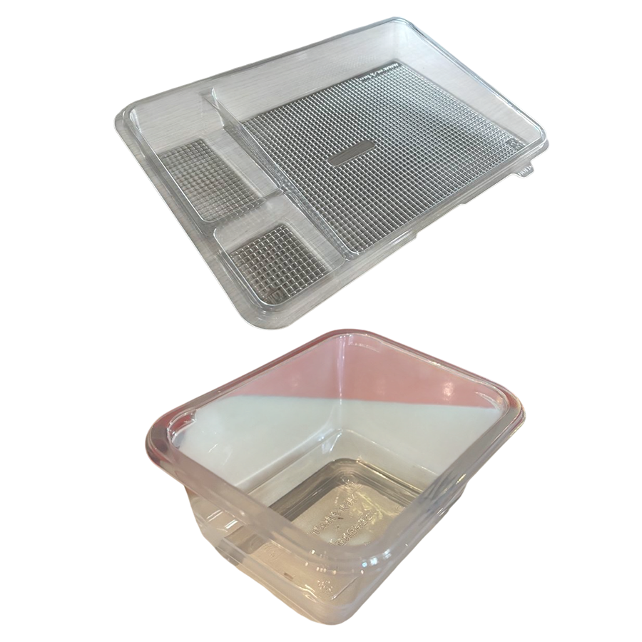

🧡 Почему это важно?
Т-Банк любит прозрачность — как в рекламе, так и в жизни. Мы будем доставлять прозрачные спринг-роллы и наш фирменный сет роллов в прозрачной упаковке. Каждая деталь на виду!
⚠️ За ошибки — штрафы в миллионах!
🎯 Кто ты? Выбери свою роль, чтобы я подсказывал тебе самое важное.
(выбери и нажми далее, чтобы увидеть персональные подсказки)
💡 Запомни: мы не прячем еду — мы её показываем. Поэтому каждый заказ должен выглядеть как на витрине.
🛍️ 1. Все заказы складываем и доставляем в прозрачный брендированный пакет Т-банка.
🧊 2. Внутрь пакета обязательно кладём прозрачный зиплок (гостевой бокс) (вместо нашего белого брендированного).
📌 Если блюда Т-банка нет — действуем по нашим привычным стандартам Тануки:
например: прозрачный сет + суп Тануки ям — доставка в прозрачном пакете + прозрачный гостевой бокс
ролл Филадельфия + суп Тануки ям — доставка в нашем белом пакете + белый гостевой бокс
⛔ Важно! Если заканчиваются прозрачные контейнеры для сета или спринг-роллов — блюда или блюдо встаёт в стоп. Нельзя заменять на нашу стандартную упаковку — это нарушит прозрачность и приведёт к штрафам.
📋 Что делаем, когда что-то закончилось:
🤝 Выбери роль, чтобы увидеть совет.
🍱 Все 4 вкуса → брелок (только МСК/МО) + визитка (открытка)
📦 Сет «Прозрачный» → палочки + визитка (открытка)
🍣 Любой прозрачный спринг-ролл → одна визитка (открытка)
💡 Если заканчиваются подарки (брелоки, палочки, визитки (открытки)) — доставляем заказ без них. Это разрешено.
📋 Общее правило:
📌 Примеры:
🤝 Выбери роль, чтобы увидеть совет.





✅ Каждый спринг-ролл — в отдельный прозрачный контейнер.
❌ Нельзя класть два и более ролла в один контейнер — они слипнутся, и гость расстроится.
📌 Если заказано 3 ролла → нужно 3 контейнера. Просто и понятно.
🧑🍳 Для повара: готовь каждый спринг-ролл отдельно и сразу укладывай в отдельный контейнер.
🔪 Повар:
📋 Оператор доставки и менеджер:
🤝 Выбери роль, чтобы увидеть совет.
⚠️ Штрафы — миллионы! Договор с Т-банком требует идеального качества. Ошибка = большие деньги.
📋 Ситуация 1: Заказаны два разных спринг-ролла (не все 4).
📦 Ситуация 2: Заказаны все 4 вкуса + сет «Прозрачный».
⛔ Что делать, когда что-то закончилось?
🤝 Выбери роль, чтобы увидеть совет.
📢 Обязательно курьеру:
«Сумку с заказом нельзя наклонять, кидать, переворачивать. Везти ровно и аккуратно».
🧩 Для менеджеров: убедитесь, что операторы и курьер поняли инструкции. Проводите с сотрудниками 5-минутный брифинг перед началом смены.
Поздравляем, ты прошёл обучение по акции
Тануки × Т-Банк
Теперь ты знаешь всё о прозрачности, подарках и упаковке.
Распечатай этот сертификат и повесь на видное место!